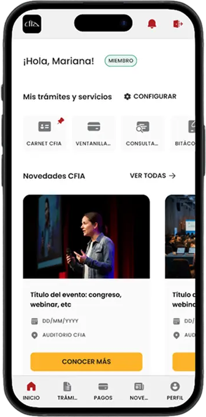

Información y servicios digitales
Lo que puede hacer cada tipo de usuario en los servicios digitales del CFIA.
App CFIA
Lo que se puede hacer desde la aplicación móvil del CFIA.

A través de sus servicios digitales, el CFIA agiliza trámites y promueve la eficiencia y transparencia para todos sus públicos. Para personas colegiadas y empresas, ofrece herramientas como APC, APT, Bitácora Digital, pagos en línea, y certificaciones. Para instituciones y gobiernos locales, facilita el visado digital de planos, la fiscalización de obras y la consulta de requisitos. Todo esto se complementa con la App CFIA, que integra los principales servicios, pagos, convenios y el carné digital en una experiencia móvil ágil y personalizada.
Lo que puede hacer cada tipo de usuario en los servicios digitales del CFIA.
Lo que se puede hacer desde la aplicación móvil del CFIA.
